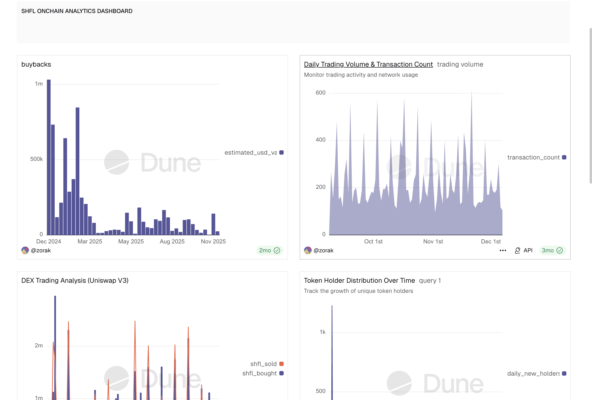
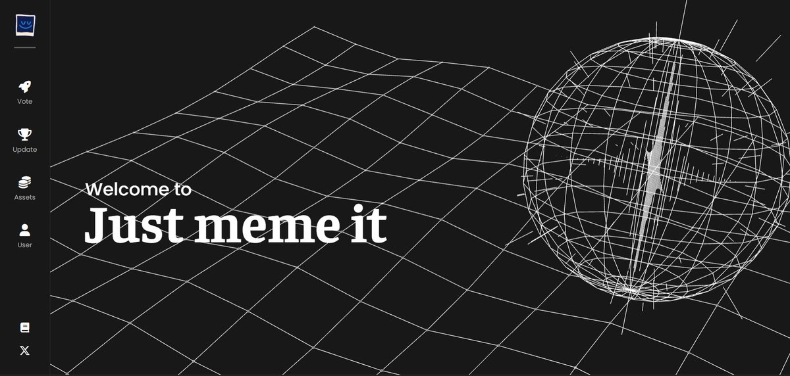
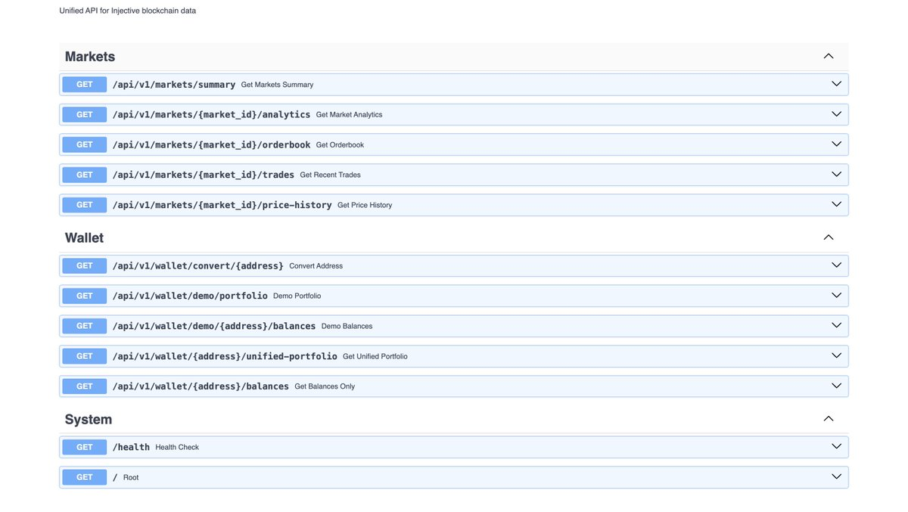

Available for Web3 Opportunities
I am Zorak.
Blockchain Content Strategist · Onchain Analyst · Web3 Growth Operator
I operate at the intersection of data, narrative, and community — translating complex onchain intelligence into viral content strategies and building ecosystems that grow. Award-winning writer. Web3 shitposting engineer.
3+
Years Active
5+
Web3 Projects
40+
Students Taught
∞
Threads Written
Work Experience
2025
→ present
→ present
Ghostwriter
0xTulkas0 & 0xBreyn
- Craft high-engagement Twitter/X threads for prominent crypto accounts
- Create viral content driving community engagement and brand awareness
- Develop voice, positioning, and narrative strategies for Web3 personal brands
2024
→ present
→ present
Social Media Manager
Multiple Web3 Projects
- HaikeysTweet — Social presence management for ex-EthSign team member
- SuiDom (Sui Network) — Community growth & engagement strategy
- TaxCoin — Meme coin social strategy and community management
- Scaled founder & KOL reach via reply-guy systems and content positioning
2023
→ present
→ present
Onchain Analyst
Freelance
- Conduct comprehensive onchain analysis using Dune Analytics
- Translate complex blockchain datasets into actionable ecosystem insights
- Notable: SHFL Onchain Report — deep dive into protocol metrics & user behavior
- Onchain research across Sei, Solana, Sui & TON ecosystems
2025
→ present
→ present
Vibecoder
Personal Projects
- Built a "Meme to NFT" application on Sei Network
- Rapid prototyping from concept to functional dApp
- Full-stack experimentation in blockchain app development
2025
→ present
→ present
Shitposter / Engagement Specialist
Creator
- Engagement strategist & community architect
- Leverage meme culture, narrative timing, and vibecoding for algorithmic reach
Projects

SHFL Onchain Report
Onchain Intelligence
Deep-dive protocol metric analysis with behavioral and liquidity insights.
Delivered data-backed ecosystem intelligence for Web3 stakeholders.

Meme to NFT App
Vibecoding · Sei Network
Full-stack dApp built on Sei Network enabling meme-to-NFT conversion. Rapid
prototyped from concept to functional product as a solo vibecoding experiment.

Web3 Social Growth Systems
Growth Engineering
Architected reply-guy systems, viral thread playbooks, and community loops
across multiple ecosystems including Sui, Solana, and EVM chains.

Injective Developer API for #NinjaAPIForge
API Engineering · PyInjective
A unified REST API turning raw onchain data into developer-friendly endpoints. 10 endpoints covering
live orderbook snapshots, market analytics, trade feeds, EVM conversion, and wallet portfolios across
200+ markets.
Powered by pyinjective gRPC & LCD REST, auto-refreshing every 30s.
View on GitHub ↗
Powered by pyinjective gRPC & LCD REST, auto-refreshing every 30s.
View on GitHub ↗
Featured Threads
Insights and analysis on recent Web3 ecosystem trends and my onchain thesis. 🧵👇
Read Thread ↗
most crypto apps drain your energy @0xppl_ feels like discovering god mode.
i've been testing it for some days. one screen replaced my entire workflow.
i've been testing it for some days. one screen replaced my entire workflow.
Read Thread ↗
why agents matter in DeFi
decentralized finance (DeFi) has unlocked open, permissionless access to financial systems but its usability and safety remain fractured.
decentralized finance (DeFi) has unlocked open, permissionless access to financial systems but its usability and safety remain fractured.
Read Thread ↗
DeFi promised accessibility.
But today it looks like this: 1000+ dApps, 20+ chains, endless tabs and manual setups. no wonder only ~1% of crypto holders have actually touched DeFi.
But today it looks like this: 1000+ dApps, 20+ chains, endless tabs and manual setups. no wonder only ~1% of crypto holders have actually touched DeFi.
Read Thread ↗
bitcoin is entering its agentic era as artificial intelligence agents evolve into autonomous economic
actors and institutions seek productive deployment of their bitcoin treasuries...
Read Thread ↗
Deep dive into onchain intelligence and market dynamics. Everything you need to know. 🧵👇
Read Thread ↗
Skills & Tools
Analytics Stack
Blockchain Research
Content & Growth
Community Building
Development
Ecosystems
Growth & Development
6-Month Data Science Path
Structured learning roadmap covering Statistics, Excel, SQL, and Tableau —
building toward advanced analytics mastery.
5-Hour Daily Study System
Dedicated daily deep-work structure for accelerated skill acquisition in data
science and Web3 intelligence.
Crypto Education — 40+ Students
Taught crypto trading fundamentals to 40+ students, building teaching instincts
alongside technical knowledge.
Target: Web3 Data & Growth Strategist
Scaling toward mastery of advanced analytics, onchain intelligence, and narrative
dominance across Web3 ecosystems.
Community Involvement
Team Member
0xsweep Organization
Education
B.Tech in Information Systems
Federal University of Technology, Akure · 2023 – Present
System Administration & Maintenance
Application Development
Knowledge Management & Information Retrieval
Awards
Rova Writing Contest
Multiple Winner